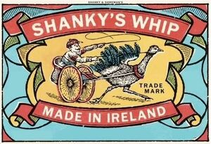

Trade Mark Journal No.2026/008 20 February 2026
WO0000001891076 (33)
Office of origin: United States of America

The mark consists of a rectangular alcoholic beverage bottle label outlined in black with a light blue and yellow background and red shading along the left and right top portion and the bottom left and right corners. At the center of the label against the yellow portion of the background appears the stylized design of a man appearing in white sitting in an old-fashioned two wheeled carriage being pulled by a racing ostrich, all shown in profile. The carriage features a basket with horizontal black stroke marks and red shading around the top. The wheels of the carriage feature black spokes with red shading along the outside and red and light blue shading on the center hinges. The man is holding a raised black whip in his left hand and is tugging on the ostrich reins with his right hand. The man has a black mustache and is wearing a red hat with black stroke marks and a shirt with black stroke marks with red shading on the upper arms, light blue shading around the waist. The ostrich has a red collar around its neck, light blue shading on its tail feathers, and a yellow beak. Black stroke marks are used to represent shadows below the ostrich's legs and below and behind the carriage wheels. Below the ostrich's neck appear the words "TRADE MARK" in black in two separate lines. Above and below the ostrich racing design appear two red ribbon banners outlined in black. Inside the top banner are the words "SHANKY'S WHIP" in white capital letters. Inside the bottom banner are the words "MADE IN IRELAND" in white capital letters. The ends of the bottom ribbon curl into themselves and feature green and yellow shading on the inside with black stroke marks, whereas the ends of the top ribbon, which feature green and light blue shading on the inside with black stroke marks, fold upward and end into the top border of the label. Around the sides of the ostrich racing design appear yellow and green decorative design elements which mimic the curves and shading of the ribbon banners. The main label is outlined by a thin beige outer border. In the top center section of the border appear the words "SHANKY & SHIREMAN'S" in small black capital letters.
Registration of this mark shall give no right to the exclusive use of "TRADE MARK" and "MADE IN IRELAND"
The mark contains the colours black, white, red, light blue, green, yellow, beige.
The mark consists of a rectangular alcoholic beverage bottle label outlined in black with a light blue and yellow background and red shading along the left and right top portion and the bottom left and right corners. At the center of the label against the yellow portion of the background appears the stylized design of a man appearing in white sitting in an old-fashioned two wheeled carriage being pulled by a racing ostrich, all shown in profile. The carriage features a basket with horizontal black stroke marks and red shading around the top. The wheels of the carriage feature black spokes with red shading along the outside and red and light blue shading on the center hinges. The man is holding a raised black whip in his left hand and is tugging on the ostrich reins with his right hand. The man has a black mustache and is wearing a red hat with black stroke marks and a shirt with black stroke marks with red shading on the upper arms, light blue shading around the waist. The ostrich has a red collar around its neck, light blue shading on its tail feathers, and a yellow beak. Black stroke marks are used to represent shadows below the ostrich's legs and below and behind the carriage wheels. Below the ostrich's neck appear the words "TRADE MARK" in black in two separate lines. Above and below the ostrich racing design appear two red ribbon banners outlined in black. Inside the top banner are the words "SHANKY'S WHIP" in white capital letters. Inside the bottom banner are the words "MADE IN IRELAND" in white capital letters. The ends of the bottom ribbon curl into themselves and feature green and yellow shading on the inside with black stroke marks, whereas the ends of the top ribbon, which feature green and light blue shading on the inside with black stroke marks, fold upward and end into the top border of the label. Around the sides of the ostrich racing design appear yellow and green decorative design elements which mimic the curves and shading of the ribbon banners. The main label is outlined by a thin beige outer border. In the top center section of the border appear the words "SHANKY & SHIREMAN'S" in small black capital letters.
- Class 33
- Whiskey liqueur complying with the specifications of the PGI Irish Whiskey.
Biggar & Leith, LLC
Representative: Osborne Clarke LLP, One London Wall London EC2Y 5EB UNITED KINGDOM